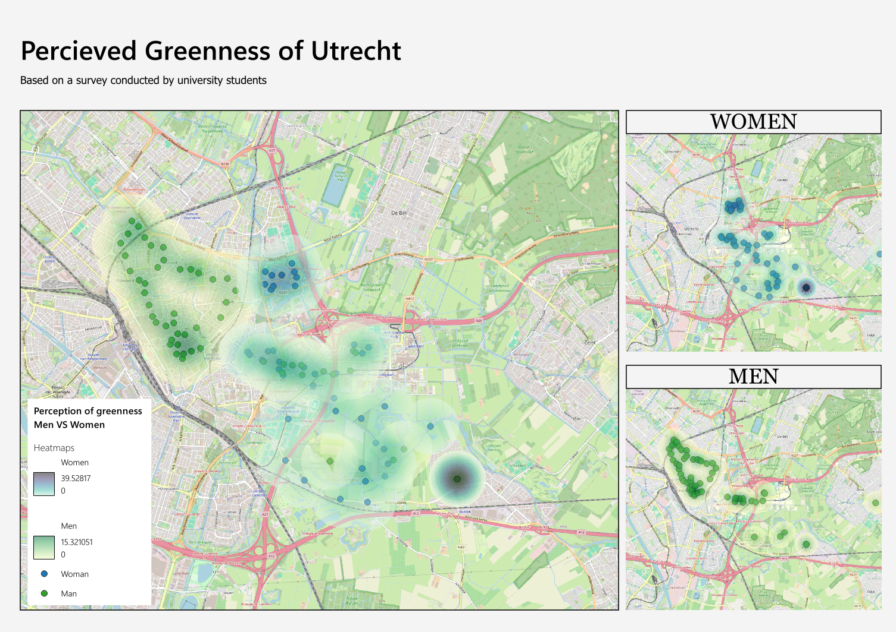
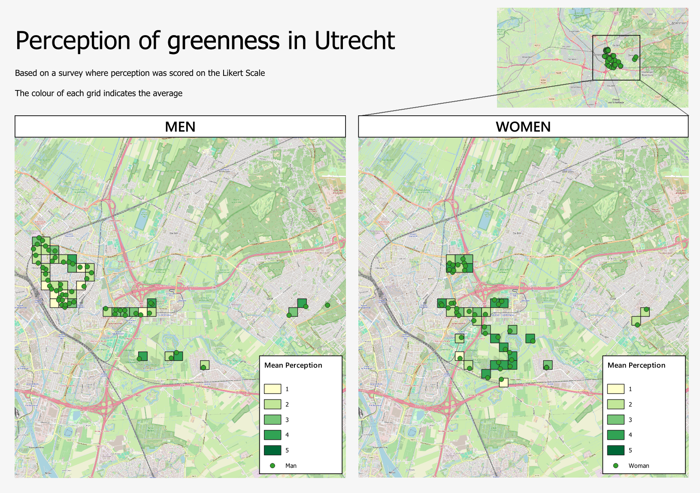

Vector Data Analysis
Accessibility of Playground Swings and Perception of Greenness
This project contains two sections. In the first section, I answer a spatial query regarding playground swings with OpenStreetMap (OSM) data. In the second section, I use Volunteered Geographic Information (VGI) to analyse the perception of greenness in Utrecht.
Section 1: Open Street Map Data
Project Overview
OpenStreetMap (OSM) data are globally generated Volunteered Geographic Information and can be used to find gaps of service in a city, amongst others. This project will configure the walking distance to playgrounds with swings in The Hague using QGIS. I create an isochrone map, which depicts the area that is accessible from a point within a certain threshold. The exploratory section of this assignment dives into the relation to cannabis stores. The further analysis focusses on the number of houses and appartment buildings that are within walking distance of a playground with a swing.
Methods
The operations of this assignment were performed in QGIS. The OSM data was retrieved through the 'Quick OSM' plugin, and the 'QuickMapService' plugin provided the basemap. After navigating to the city of The Hague, I used the 'canvas frame' to select the necessary variables (playground_swings, shop_cannabis). To create the isochrone maps, the 'OpenRouteService' routing algorithm and the 'ORS tools' plugin were used. I selected walking distance, with travel times of 1, 3 and 5 minutes. To determine how many houses and appartment buidings were within these travel times, all the building footprints were downloaded into GIS. These were then converted to points and defined as residences. Using the GIS vector analysis 'count points' tool, I determined the number of residences within each walking distance, which was used to make the isochrone layer.
Results and Findings
How many cannabis stores of The Hague are within walking distance of a playground siwng?

Figure 1: Playground swing accessibility in terms walking times of 1, 3 or 5 minutes, compared to cannabis store locations.
Figure 1 illustrates the accessibility of playgrounds with a swing, in terms of walking distance. The darker the shade, the shorter the travel time. The green dots indicate the swings themselves. The most important observation to note is that there are barely any playgrounds with swings near the city center. The are two distinct clusters, one in the east and one in the west. In the exploratory phase of the creation of this isochrone map, the locations of cannabis shops were selected from the OMS data. I was curious about this as I wondered whether there are any shops selling cannabis at a walking distance from playground swings. Figure 1 reveals that this is the case for two playground swings in the west of the region. I believe the lack of overlap is positive, as this may result in less contact between children on a playground and adults smoking weed.
How many apartments and houses in The Hague are within 1, 3 or 5 minutes walking distance of a playground swing?

Figure 2: Playground swing accessibility in terms of residences within a walking time of 1, 3 or 5 minutes.
Here, each ring still represents a walking distance of 1, 3 or 5 minutes. However, now the color of the ring indicates the number of residences enclosed in the area. Thus, if the outer ring is the darkest shade of blue, 346.6-1132 houses or apartments are within 5 minutes walking distance of a playground with a swing. Playground swings that have three dark rings would be in a very dense neighbourhood, while thse with light rings are surrounded by less residences. Interestingly, playgrounds with light inner ring but dark outer rings are probably present in a small park and thus not directly surrounded by buildings.
Reflection
Before moving out, I lived with my parents in the Hague for almost 8 years. Thus, I had a lot of fun during the experimental phase of this assignment, loading in different variables of the OMS data just to see if there was any interesting relation to see at first sight. After more time than I would like to admit, I decided to compare the playground swings to cannabis stores. Interestingly, these two playgrounds that I found overlapping with the stores are exactly those I visited frequently when I was growing up in The Hague. The second analysis made me realise how much information there is availabe. Almost each building is recognised as a building and can thus be used in analyses as these. Such vast potential.
Section 2: Volunteered Geographic Information
Project Overview
In the second section of this assignment I use voluntarily collected data (i.e. VGI) to perform two vector analysis techniques. Specifically, my classsmates and I went out into the city of Utrecht to collect data on several variables. I chose to look at the 'greeness' scores of the survey and how this differed between men and woman. Results are illustrated this in both a diffusion map and a grid map.
Methods
The VGI data was collected by mulltiple student in and around the City of Utrecht. The survey was completed at various locations, by various people. The variable of interest is 'greenness' and was recorded on a scale from 1 (bad) to 5 (good) in the survey. A heat map is an example of a density surface and was generated using Kernel Density Estimation. In other words, point observations were converted into a continuous surface showing the kernel density values. The values on the final colour scale do not indicate the ranking as given in the survey. Rather, it illustrates the contribution of a score to the density. A 'greenness' score of 1 contributes ittle density, while a score of 5 contributes a lot of density. A grid map contains square grid boxes, each assigned a different colour based on the average 'greeneess' score recorded by the survey within the area of the grid. In contrast to the heat map, this allows for an easier comparison between males and females, as the survey scores remain the original values.
Results and Findings
Heat Map

Figure 3: Diffusion map comparing greenness scores of men and women, using VGI data.
In the diffusion map, the green densities represent the male respondents, and the blue represents the female respondents. Here, the density map can be misleading, as a lighter color (indicating a lower value of greenness) only occurs further away from data points. Also most scores are relatively high. Thus, comparing different greenness scores is difficult. The two separate maps of males and females shows that the survey responses vary spatially between men and women. More men surveyed in the Binnenstad, while more females responded towards the east. Still, the density map cannot provide much conclusive information about the density distribution of the greenness scores.
Grid map

Figure 4: Grid map comparing greenness scores of men and women, using VGI data.
The grid was created with the goal to identigy the difference in greenness score between between men and women. Generally speaking, it seems that the male respondents gave greenness a lower score more often, specifically in the Binnenstad. However, as stated above, no female responses originated from the Binnenstad. Besides this, the Binnenstad can be expected to be less green than the eastern parts of the city. Thus, it makes sense that the men score greenness lower. When comparing equal grids between males and females, for example all the way in the east, the men score the greenness higher. In all other areas, the responses seem rather comparable.
Reflection
Before moving out, I lived with my parents in the Hague for almost 8 years. Thus, I had a lot of fun during the experimental phase of this assignment, loading in different variables of the OMS data just to see if there was any interesting relation to see at first sight. After more time than I would like to admit, I decided to compare the playground swings to cannabis stores. Interestingly, these two playgrounds that I found overlapping with the stores are exactly those I visited frequently when I was growing up in The Hague. The second analysis proved to be challenging, the question could not be answered very well. Thus, Thus, in order to answer the question more precisely, a difference map could be created of the grid surfaces, to see the difference in responses. Besides this, the data collected was not perfect, and greenness may be very subjective. The interpretation of the greenness score when answering the survey could differ depending on your general standard of greenness, or even the previous areas you visited that day. Besides the inconclusive results, the analysis itself also came with obstacles. My main take aways from this assignemt are the importance of choosing the right coordinate system, converting survey scores to integers (even if they look like integers, they can still be strings!) and to save temporary layers you create along the way.
Project Details
- Course: GIS and Cartography
- Instructor: Britta Ricker
- Date: 17 June 2026
- Study Area: The Hague
Software & Tools
- QGIS
- Quick OSM
- QuickMapService
- OpenRouteService